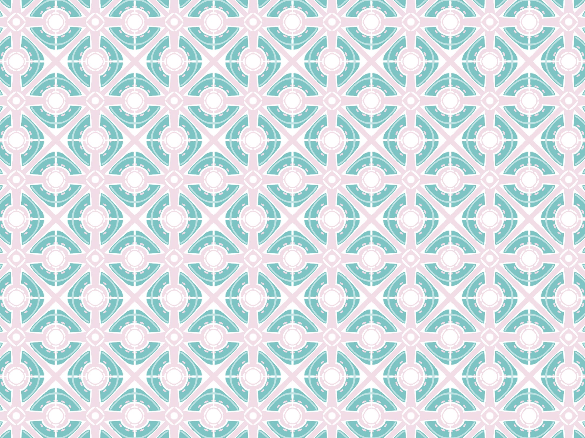
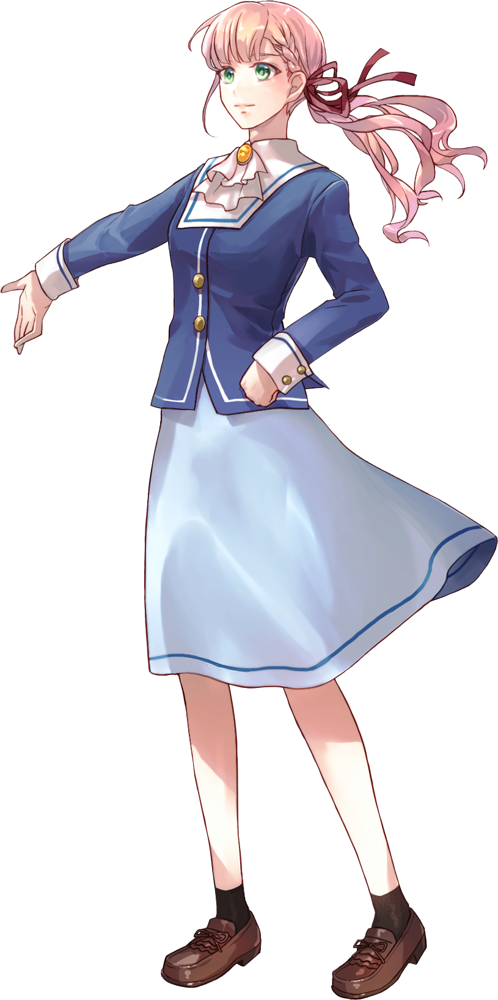
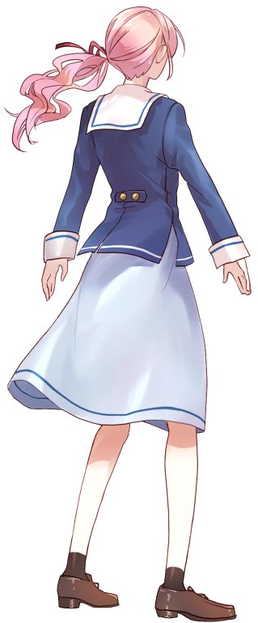
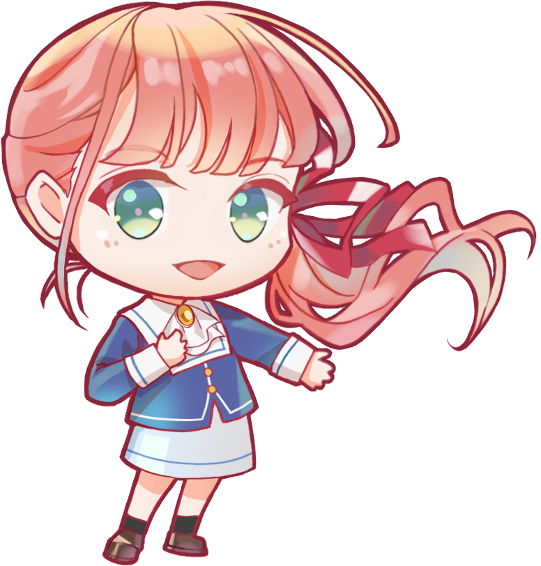
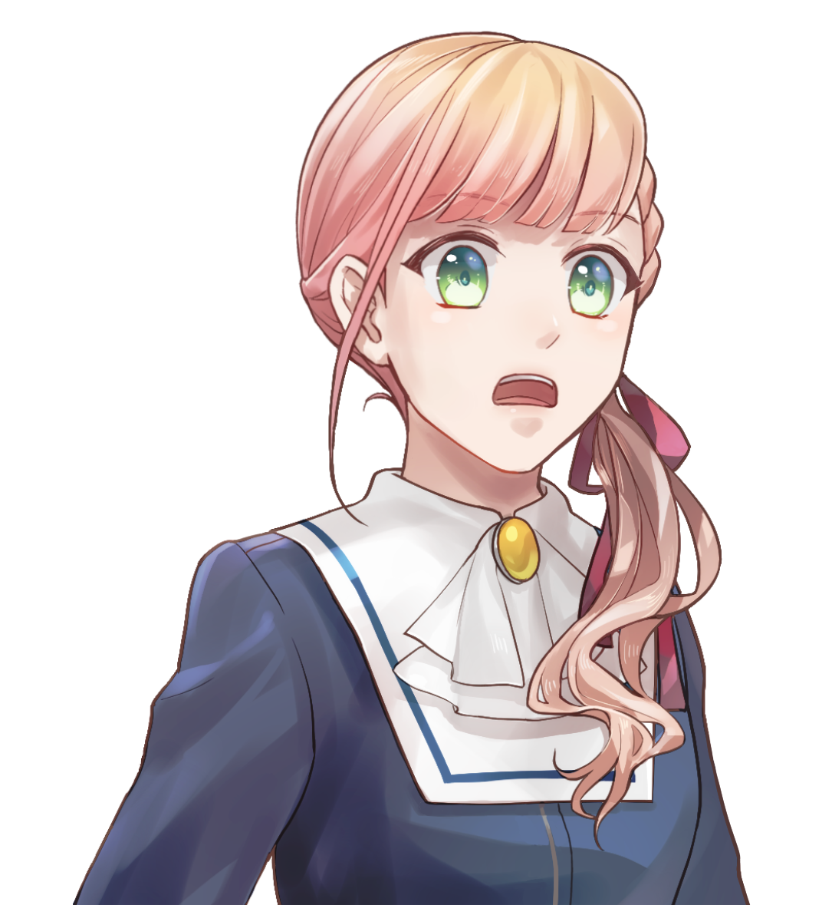
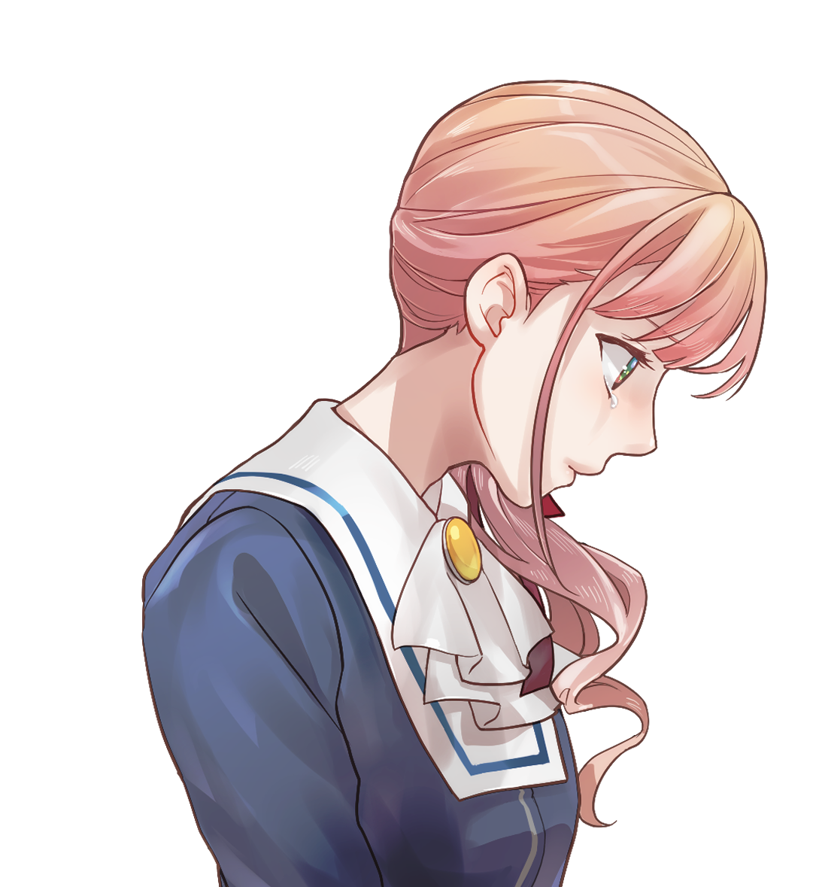

「──この世界で何か
見つけられるかもしれない」
| 年齢 | 17歳 |
|---|---|
| 職業 | 高校2年生 |
| 身長 | 158cm |
| 趣味・特技 | ガーデニング |
| 家族構成 | 父・母 |
| イメージカラー | 珊瑚色（さんごいろ） |

横浜の周りに他者には見えない壁が見えており、
横浜から出たことがない。
幼い頃に横浜から出ようと試みて
港から船に乗ったことがあるが、
船が壁へ衝突してしまい、
横浜から出ることはできなかった。
衝突事故は船舶座礁として処理されたが、
めぐみの瞳にはただひとり、壁との衝突の瞬間を映っていた。
それ以来、
外への憧れは消えてしまい、
「私は横浜が好きだから」
と自分へ言い聞かせている。
壁から出られないことを母から
「氏神様に愛されているからよ」
と教えられて育ったが、
実際は自らが氏神の血をひいているからだと
未来の横浜で知ることになる。

